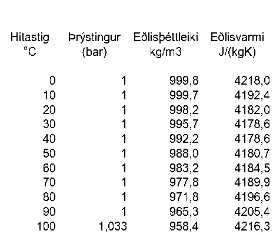

Háskóli Íslands Umhverfis- og byggingarverkfræðideild Húsagerð
Björn Marteinsson
8. 8 Orkutap bygginga og hitunarþörf
8.1. 8.1 Almennt
Þegar kólnunartala byggingarhluta, U-gildi, er þekkt þá má auðveldlega reikna varmaleiðnitap byggingarhluta, sbr. einnig skilgreiningu á U-gildi fremst í kafla 2.;
|image1| (8.1)
þar sem Qt varmaleiðnitap, W
U kólnunartala, W/(m2·K)
A flatarmál byggingarhluta, m2
Ti innihitastig, °C
Tu útihitastig, °C
Á samsvarandi hátt má finna varmaskiptatap vegna loftskipta þegar loftskiptamagn er þekkt.
Í kaflanum verður samkvæmt hefð notuð einingin vattstund (Wh) í útreikningum á orkujafnvægi húss.
Lengi hefur verið gert ráð fyrir því að ákvörðun hitunarþarfar sé ákvörðuð útfrá orkujafnvægi viðkomandi húss, og hafa verið til staðlar varðandi slíkt í einstökum löndum. Nú liggja fyrir alþjóðlegir staðlar eða drög að stöðlum (ISO og EN) fyrir slíka útreikninga og mun ætlunin að útreikningar hérlendis verði í samræmi við þá. Um talsvert marga staðla er að ræða, sjá mynd 8.1, og erfitt fyrir hönnuði að hafa gott yfirlit yfir þá alla. Til einföldunar hefur því verið valið að fara svipaða leið og Danir eins og lauslega var rætt í kafla 2. Danski staðallinn DS 418 er samantekt yfir helstu reglur í EN stöðlunum, hérlendis er í gildi Íslenskur staðall ÍST 66 “Varmatap húsa – Útreikningar” sem vísar til danska staðalsins en inniheldur einnig nokkur Íslensk sérákvæði. Vegna þessarar stöðu er nauðsynlegt að fjalla nokkuð um helstu EN staðlana sem fjalla um einangrun og varmatapsútreikninga, og taka jafnframt mið af ÍST 66 (ásamt DS 418).
8.1.1. ÍST EN ISO 10077-1:2000
Staðallinn fjallar um einfaldaða leið til útreikninga á varmamótstöðu glugga og hurða. Gluggaflötur er skilgreindur sem summa glerflatarmáls (Ag) , miðað við ljósmál, og karmflatarmáls (Af). Kólnunartala glugga skal reiknuð samkvæmt jöfnunni;
Uw= (Ag Ug + AfUf + lg g)/(Ag + Af) (8.2)
Ug kólnunartala glers
Uf kólnunartala karms
g kuldabrú vegna áhrifa jaðarsvæðis glers og karms
lg ummál ljósops glers
Ag + Af flatarmál múrops
prEN 1190 (staðaluppkast)
Gólf ; Útreikningur varmaflæðis til jarðar
prEN 410 (staðaluppkast)
Gler; ljós og orkueiginleikar
ÍST EN ISO 10077-1:2000
Gluggar og hurðir; Reikningar varmaflutnings – einfölduð aðferð
ÍST EN ISO 13786:1999
Byggingarhlutar; Kvikir útreikningar á varmaflutningi
EN ISO 7345
Einangrun; ýmsar skilgreiningar
ÍST EN 12524:2000
Einangrun; ýmis hönnunargildi
ÍST EN 10456:1999
Einangrun; Ákvörðun hönnunargilda
ÍST EN ISO 10211-1:1995
Byggingarhlutar; Reiknaðar kuldabrýr
ÍST EN ISO 13789:1999
Byggingar ; reiknað leiðnitap
ÍST EN ISO 6946:1996
Byggingarhlutar; Reiknuð varmamótstaða og varmaflutningur
ÍST EN 832:1998
Byggingar; Reiknuð orkuþörf
(ÍST EN ISO 14683:1999 Thermal bridges in building constructions – Linear thermal transmittance- Simplified methods and default values, og fl. kuldabrúarstaðlar ekki meðtaldir)
Mynd 8.1 Yfirlit yfir lítinn hluta staðla vegna útreikninga á varmaflutningi í byggingum
Samkvæmt staðlinum má reikna kólnunartölu fyrir (margfalt) verksmiðjugler þannig
Ug= 1/ ( Rse+ j(dj/j) + jRs,j+ Rsi) (8.3)
Rse og Rsi varmayfirgangsmótstöður úti og inni
dj , j þykkt og leiðnitala efnislaga (glers) j
Rs,jvarmamótstaða loftbils j (gefin upp í töflu)
Gert er ráð fyrir að Uf gildi karms sé ákvarðað með tölulegum aðferðum í samræmi við prEN ISO 10077-2 og þannig að ekki sé meðreiknuð kuldabrú g við glerjaðar/ ísetningu. Í staðlinum eru viðmiðunargildi fyrir jaðarkuldabrú g ;
timburkarmur, 2-falt gler; g=0,0 4 W(mK)
Viðmiðunargildi fyrir kólnunartölu karms, Uf, eru ekki gefin upp enda sennilega gert ráð fyrir að framleiðandi sjái um slíkt.
Aðferðin sem staðallinn lýsir byggir á talsverðum úreikningum, og þá á eftir að taka tillit til hugsanlegrar kuldabrúar vegna tengingar karms við vegg. Hérlendis er hefðbundið að steypa karm í vegg og tengingin steypa - timbur- gler í karmhluta sem er almennt aðeins 62mm að þykkt (í plani veggjarins) gerir að verkum að varmastreymið er langt í frá línulegt eða ótruflað. Það er því eðlilegt að líta á þennan hluta í heild sem 2- vítt ástand og gefa varmatapið upp á lengdarmetra fyrir karm og nota hefðbundið gildi á kólnunartölu Ug fyrir ljósmálshluta glersins. Þá fæst meðal- kólnunartala glugga sem
Uw= (Ag Ug + lgk+lp p)/(Ag + Af) (8.4)
k kólnunartalakarmhluta í vegg og jaðarsvæðis glers W/(mK)
p kólnunartala gluggapósta og jaðarsvæðis glers W/(mK)
lk lengd karmstykkja glugga m
lp lengd pósta í glugga m
… önnur tákn sem fyrr
ÍST EN ISO 14683:1999
Staðallinn fjallar um einfaldaða leið til að ákvarða kuldabrýr og gefur upp viðmiðunargildi (kuldabrúartafla, “catalog”)….
EN ISO 10211-1:1995
Kuldabrú (e: thermal bridge): Hluti hjúpflatar þar sem annars regluleg varmaflæðimótstaða breytist verulega vegna þess að;
hjúpflötur er að hluta eða öllu leyti skorinn af efni með annarri leiðnitölu
þykktarbreytinga
mismunur í innra og ytra flatarmáli, eins og gerist þar sem gólf, eða loft, og veggir koma saman
BM: Almennt telst kuldabrú vera þar sem annars einvítt varmaflæði verður tví- eða þrívítt.
8.1.2. ÍST EN 832:1998
Í staðlinum er fjallað almennt um áætlun orkutaps og hitunarþarfar og er í eftirfarandi tekið mið af því. Staðallinn vísar til fjölda annarra staðla eða staðla uppkasta er varða útreikninga á kólnunartölum ofl. og skilgreinir eftirfarandi uppbyggingu greiningarinnar;
Skilgreina kerfismörk fyrir hitað rými - hugsanlega skipt í svæði 1)
Ákveða hönnunarhitastig innandyra
Ákvarða ytri skilyrði og reiknitímabil
Fyrir hvert reiknitímabil skal reikna ;
varmatap Ql
varmagjöf frá innri orkugjöfum Qi
varmagjöf frá sól Qs
nýtnistuðul varmagjafar
hitunarþörf
Qh = Ql - Qg(8.5)
þar sem Qg = Qi + Qs
og finna loks hitunarþörf ársins sem summu Qh einstakra tímabila.
1) Ef hönnunarhiti mismunandi húshluta er meiri en 4K eða ef hlutfall milli orkutaps og orkugjafar er mjög mismunandi milli húshluta. Síðara ákvæðið gerir að verkum að almennt þarf að skipta húsum í svæði sem fá mikla beina sólargeislun og svo önnur svæði, þetta verður rætt síðar.
Staðallinn gerir ráð fyrir að útreikningar miðist almennt við fastan innihita (bls. 9).
Orkujafnvægið byggir þannig á ákvörðun tapliða annarsvegar og orku sem húsinu berst hinsvegar;
Orkutap
Leiðnitap ; Qleiðni
Tap sem verður vegna leiðnitaps um byggingarhluta vegna hitamunar úti og inni
Loftskiptatap; Qloftskipti
Tap sem verður vegna loftskipta í húsi, skipti á hlýju innilofti og kaldara útilofti. tapið verður vegna loftskipti vegna loftræsingar annarsvegar og óþéttleika húss hinsvegar
Tap vegna kranavatns; Qkran
Heitt kranavatn krefst orku en hluti hennar nýtist til hitunar hússins
Orka sem berst húsi
Varmi vegna geislunar frá sól og himni; Qsól
Milli húss og umhverfis verður varmaflutningur vegna geislunar, mest áberandi vegna geislunar frá sól, en geislun frá himni eða til himins hefur einnig áhrif.
Varmi frá íbúum; Qíbúar
Íbúar, og notendur húss almennt, gefa frá sér varma sem nýtist til hitunar.
Varmi frá almennri raforkunotkun; Qalm.raforka
Vegna raforkunotkunar til lýsingar og tækja í húsi þá verður varmamyndun sem nýtist til upphitunar
Varmi til hitunar (eða kælingar); Qhitun
Orka sem á vantar til að halda jöfnum innihita og til hitunar kranavatns kemur frá hitakerfi hússins (og eða kælikerfi).
Orka sem berst húsi og nýtist því til hitunar, án þess að greitt sé fyrir hana í þeim tilgangi, er iðulega kölluð „gefins varmi“.
Qleiðni + Qloftskipti + Qkran + Qsól + Qíbúar + Qalm.raforka+ Qhitun = 0 (8.6)
Verður hér fjallað um einstaka liði, en hluti af orkuliðunum eru illa eða ekki skilgreindir fyrir Íslenskar aðstæður. Iðulega miðast útreikningar hér t.d. við að gefins varminn samvari 2-3 °C í innihita og því reiknað með lægri hönnunarhita sem því nemur. Hér verður ekki nánar fjallað um hverju gefins varminn nemur, og látið nægja að nota þessa nálgun.
Orkutap verður í eftirfarandi umfjöllun fengið með útreikningum sem byggja á gráðutímakerfinu, þ.e. tímaeining í útreikningum er klukkustund.
8.2. 8.2 Orkutap húss
Fjöldi staðla fjallar um leiðnitap bygginga og byggingarhluta og verður hér gerð stutt grein fyrir helstu ákvæðum.
8.2.1. ÍST EN ISO 13789:1999
Staðallinn fjallar mjög almennt um útreikning leiðnitaps, skilgreiningu umfangs flata af mismunandi gerðum s.s. almennir fletir, gluggar og kuldabrýr.
Í staðlinum er eftirfarandi almenn skilgreining á útreikningi leiðnitaps;
HT = LD+ Ls +Hu (8.7)
HT heildarleiðnitap, W/K
LD beint leiðnitap (ótruflað), W/K
LS Leiðnitap um jörðu, W/K
HU Leiðnitap um óhituð rými, W/K
LD = iAi Ui+ klk k + jj (8.8)
þar sem Ai flatarmál einingar i, m2
Ui varmatap einingar i á flatareiningu, W/(m2 K)
lk lengd kuldabrúar k, m
k línukuldabrú k, W/(m K)
j púnkt-kuldabrú j, W/K
8.2.2. Varmatap um byggingarhluta samkvæmt ÍST EN 832:1998
Staðallinn gerir ráð fyrir að varmatap um byggingarhluta sé almennt byggt á ákvörðun kólnunartölu þeirra og stærð, eins og nánar er fjallað um í prEN ISO 10077-1 (gluggar og hurðir) og EN ISO 13789 (byggingarhlutar almennt);
Ql = UiAi (8.9)
þar sem Ui er kólnunartala byggingarhluta, W/(m2K)
Ai flatarmál byggingarhluta, m2
Þegar varmaflutningur truflast, t.d. vegna áhrifa kuldabrúa, gilda sérreglur eins og fjallað er um í staðli ÍST EN ISO 10211-1:1995 (varmatap um kuldabrýr).
Varmaflutningsstuðull kuldabrúa er gefinn upp sem varmatap á lengdarmetra og orkutap um kuldabrýr fæst sem;
Qlk = iLi (8.10)
þar sem i varmaflutningsstuðull kuldabrúar, W/(mK)
Li lengd kuldabrúar, m
Varmaflutningsstuðul (kólnunartölu) kuldabrúa þarf að reikna með aðferðum sem skipta reiknisviðinu upp í fjölda eininga, og krefjast þannig almennt tölvuforrita. Í töflu 2.8 eru upplýsingar um kuldabrúargildi nokkurra algengra kuldabrúa í steyptum húsum.
Af töflu 2.8 má sjá að kuldabrýr vegna milligólfa og steyptra milliveggja vega hátt. Í töflunni eru einnig kuldabrýr vegna timburkarma í steyptum vegg, en þau eru reiknuð inn í U-gildi glugga.
8.2.2.1. 8.2.2 Loftskiptatap byggingar
Loftskiptatap verður þegar skipt er á köldu útilofti og hlýju innilofti, loftskipti verða af tvennum ástæðum;
Loftræsing vegna stýrðra loftskipta um glugga eða með loftræsikerfi
Loftleki vegna áhrifa mismunaþrýstings á óþétta byggingu
Mæliniðurstöður á þéttleika húsa hérlendis, Björn Marteinsson og Jón Sigurjónsson (1997) sýna að steypt hús eru almennt mjög þétt, nema hugsanlega efsta hæðin vegna áhrifa frágangs timburþaks.
8.2.3. ÍST EN 832:1998
Í staðlinum eru leiðbeiningar varðandi hvernig meta skuli loftskipti útfrá aðstæðum, m.a. tegund húss og umhverfi (Appendix F, töflur F2 og F3), og varmaflutningur vegna loftskipta fundinn samkvæmt jöfnu 8.11.
|image2| (8.11)
þar sem HV varmaflutningsstuðull loftskipta, W/K
Va loftræst magn, m3/h
VR rúmmál hitaðs rýmis, m3
a eðlisþéttleiki lofts, kg/m3
ca eðlisvarmi lofts, J/(kg·K)
n fjöldi loftskipta, h-1
Ráðlagt er í staðlinum að miða við n= 0,5 nema annað sé betur þekkt (§5.2.2).
Ekki er augljóst hvort þetta er eðlileg viðmiðun fyrir aðstæður hérlendis þar sem verð á hitunarorku á Reykjavíkursvæðinu er lágt og ríkt í mörgum að hafa mikið opna glugga. Hár meðalvindhraði miðað við það sem gerist víða erlendis gefur því tilefni til að reikna með hærri loftskiptum heldur en staðall gerir ráð fyrir, þrátt fyrir að t.d. steypt fjölbýli séu í eðli sínu mjög þétt. Loftskipti stærri húsa á mánaðar- eða ársgrundvelli mun sennilega ráðast meira af vísvitandi opnum gluggum heldur en þéttleika hússins. Þetta þarf hinsvegar alls ekki að gilda um minni hús, einkum timburhús eða steypt hús með timburþaki, þar sem loftlekar geta ráðið meiru heldur en í steyptu fjölbýli. Vangaveltur um mikla loftun á Reykjavíkursvæðinu eru m.a. studdar þeirri reynslu að inniloft er oft mjög þurrt í íslenskum íbúðarhúsum, þó svo rakt loft þekkist vissulega einnig sem vandamál. Loftun húsa á svæðinu er einnig örugglega mun meiri að sumarlagi heldur en vetrarlagi og því ástæða til að miða við mismunandi fjölda loftskipta eftir árstíma.
8.3. 8.3 Orkutap húss; kröfur í Byggingarreglugerð og útreikningar
Í Byggingarreglugerð er annarsvegar gerð krafa um hæstu leyfileg U-gildi byggingarhluta og hinsvegar hæsta leyfilegt leiðnitap byggingar (orkurammi).
Í Byggingarreglugerð ( og í staðlinum ÍST 66) er ekki tekið tillit til loftskiptataps við ákvörðun orkurammans, ástæða þessa er sú að þar sem loftræsikerfi eru fátíð í litlum byggingum þá mun staðsetning byggingar og loftræsivenjur notenda að mestu leyti ráða loftskiptatapinu (af eiginleikum byggingarinnar er það þá aðeins loftþéttleiki byggingarhluta sem hefur áhrif á loftskiptatap).
Byggingarreglugerð:
13.2.3 Útreikningur heildarleiðnitaps.
Heildarleiðnitap skal reiknað fyrir allar nýbyggingar. Hönnunargögnum sem afhent eru leyfisveitanda skal ávallt fylgja útreikningur á heildarleiðnitapi. Heildarleiðnitap mannvirkis, að teknu tilliti til kuldabrúa og U-gilda allra viðeigandi byggingarhluta þess, skal ekki verða hærra en fæst þegar einvörðungu er tekið mið af nettóflatarmáli byggingarhluta og hámarks U-gildum skv. ákvæðum þessarar reglugerðar, sbr. töflu 13.01…
13.3. Mesta leiðnitap byggingarhluta.
13.3.1 .Almennt um leiðnitap og U-gildi byggingarhluta.
Almennt gildir að við útreikning heildarleiðnitaps nýbygginga skal U-gildi byggingarhluta ekki vera hærra en fram kemur í töflu 13.01. Heimilt er þó að U-gildi einstakra byggingarhluta í nýbyggingum sé allt að 20% hærra en fram kemur í töflu 13.01, en þá því aðeins að einangrunarþykktir annarra byggingarhluta séu auknar tilsvarandi þannig að heildarleiðnitap mannvirkis haldist óbreytt þrátt fyrir slíka skerðingu einangrunar einstakra byggingarhluta.
13.3.2 Hámark U-gildis – ný mannvirki og viðbyggingar.
Í nýjum mannvirkjum og viðbyggingum skal leyfilegt hámark U-gilda einstakra byggingarhluta vera skv. töflu 13.01.
Tafla 13.01 (Byggingarreglugerð) Ný mannvirki og viðbyggingar Leyfilegt hámark U-gilda einstakra byggingarhluta |
||
Byggingarhluti |
Leyft hámark U-gildis (W/m2K) |
|
Ti ≥ 18 °C |
18°C > Ti1 ≥ 10 °C |
|
Þak |
0,20 |
0,30 |
Útveggur |
0,40 |
0,40 |
Léttur útveggur |
0,30 |
0,40 |
Gluggar (karmar, gler vegið meðaltal, k-gler) |
2,0 |
3,0 |
Hurðir |
3,0 |
Engin krafa |
Ofanljós |
2,0 |
3,0 |
Gólf á fyllingu |
0,30 |
0,40 |
Gólf að óupphituðu rými |
0,30 |
0,40 |
Gólf að útilofti |
0,20 |
0,40 |
Útveggir, vegið meðaltal (veggfletir, gluggar og hurðir) |
0,85 |
Engin krafa |
Á svæðum þar sem orkukostnaður vegna húshitunar er hár á íslenskan mælikvarða er þó mælt með að leiðnitap sé a.m.k. 10% lægra en fram kemur í töflu 13.01.
Yfirlit yfir stærðir
Útfrá teikningum húss er nauðsynlegt að setja upp magntökutöflu til að auðvelda yfirsýn yfir flatarstærðir, áætluð U-gildi o.fl., sjá Mynd 8.3.
Orkurammi
Stilla þarf upp orkuramma húss; ákvarða hæsta leyfilega leiðnitap og lækka U-gildi einstakra byggingarhluta ef þarf.
Í mynd 8.2 er sýnt dæmi um einbýlishús; timburhús á steyptri plötu. Fyrst er reiknaður orkurammi útfrá ákvæðum Byggingarreglugerða um U-gildi og raunstærðum einstakra byggingarhluta (vinstri hluti töflunnar), síðan tekið tillit til áhrifa kuldabrúa og einangrun byggingarhluta aukin þar sem það er talið hagstæðast hverju sinni þannig að áætlað lokagildi leiðnitaps verði ekki hærra en upphaflega reiknað gildi.
{kind=link}
Mynd 8.2 Ákvörðun orkuramma og hámarks U-gilda byggingarhluta; hér dæmi um timburbyggingu á steyptri grunnplötu
Magntök utafla; hjú pfletir og ei nangrun argildi |
||||||
Flötur |
Línu-k uldabrú |
Punkt-k uldabrú |
||||
A m: sup:2 |
U-gildi
2`∙K) |
Lengd m |
W/(m∙K) |
Fjöldi nk |
W/K |
|
Þak |
||||||
Veggir |
||||||
Gluggar |
||||||
|
||||||
karmar |
||||||
póstar |
||||||
Hurðir |
||||||
fy llingar |
||||||
karmar |
||||||
|
||||||
Gólf |
||||||
Mynd 8.3 Skema fyrir magntökutöflu
Leiðnitap byggingarhluta |
|||
Byggingarhluti |
Flatarmál (m2) |
U-gildi (W/m 2K) |
A·U (W/K) |
Þak |
|||
Veggir |
|||
Gluggar og hurðir |
|||
Varmafl utningsstuðull vegna leiðni um þak, veggi, glugga og hurðir; alls [ A·U] _alm |
|||
Gólf |
|||
Varmafl utningsstuðull vegna leiðni um gólf; alls [ A·U]
|
|||
Línu- kuldabrýr |
Lengd L |
Kuldabrú (W/mK) |
L· (W/K) |
Varmafl utningsstuðull vegna leiðni um línu kuldabrýr; alls L· |
|||
P unkt-kuldabrýr |
Fjöldi nk |
Kuldabrú |
nk· (W/K) |
Varmafl utningsstuðull vegna leiðni um punkt- kuldabrýr; alls nk· |
|||
Loftskiptatap húss |
|||
Rúmmál V |
Loftskipti n |
n·V |
|
( m3) |
1/klst. |
(m:s up:3/klst) |
|
Varmafl utningsstuðull vegna loftskipta ; alls n·V |
Heildar varmaflutningsstuðull vegna leiðni; LD= [ A·U]_allt+ L·+ nk·
Heildar varmaflutningsstuðull vegna loftskipta; HV= 0,34· n·V
Mynd 8.4 Varmatapsstuðlar byggingar
Varmatapsstuðlar, varma- og aflþörf
Útreikning á varmatapsstuðlum fyrir leiðni- og loftskiptatöp LD og HV er best að gera í töflu, sjá mynd 8.4.
Með þessi gildi þekkt skiptast útreikningar síðan í tvo liði;
reikna varmaþörf húss á mánaðar- eða ársgrundvelli
reikna aflþörf hitakerfisins
Útreikningar taka alltaf mið af viðmiðunarhitastigi innihita, sem allajafna er i= 20 °C, og viðmiðunarhitastigi útihita.
Reiknuð varmaþörf húss á mánaðar- eða ársgrundvelli
Útfrá gráðutímafjölda, sem miðast við meðalgildi útihita, og þekktum leiðni- og loftskiptagildum má reikna varmaþörf. Eins og áður hefur verið nefnt þá er iðulega miðað við að “gefins”varmi skili sem samsvarar 2-3 °C og gráðutímafjöldinn þá reiknaður eins og innihitinn sé sem þessu nemur lægri. Varmaþörf má reikna fyrir einstaka mánuði eða árið í heild útfrá viðeigandi gráðutímafjölda.
Athuga þarf að almennt er gráðutímafjöldi gólfs á fyllingu annar heldur en gildir um aðra byggingarhluta (þessvegna þarf að meðhöndla gólf sérstaklega)!
Q = G·(LD+HV) (8.12)
þar sem Q varmi, kWh
LD heildarvarmatapsstuðull vegna leiðni; A·U+ L·+ nk·
HV heildarvarmatapsstuðull vegna loftskipta; 0,34· n·V
G Gráðutímafjöldi, þús °Ch
Reiknuð aflþörf húss
Aflþörf, sem reiknuð er miðað við viðmiðunarhitastig útihita ákvarðar ofnastærðir.
Aflþörfin er reiknuð útfrá viðmiðunargildi útihita (…..). Samkvæmt frumvarpi að íslenskum staðli ÍST 66, þá er viðmiðunarhitinn -15 °C,
=(i-d)· (LD+HV) (8.13)
þar sem aflþörf, W
i innihiti, °C
d viðmiðunarútihiti, °C
… aðrar stærðir sem fyrr
Ofnastærðir eru ákvarðaðar útfrá reiknaðri aflþörf með notkun ofnatöflu frá ofnaframleiðanda, sjá t.d. meðfylgjandi töflu þar sem uppgefið T í töflunni er munur á meðalhita ofns og lofthita. Hitamuninn má reikna samkvæmt jöfnu sem kennd er við Grashof;
|image3| (8.14)
þar sem g mesti hitamunur milli ofns og umhverfis
k minnsti hitamunur milli ofns og umhverfis
Iðulega er látið nægja að reikna hitamuninn samkvæmt jöfnu 8.15;
|image4| (8.15)
þar sem Tf framrásarhitastig
Tb bakrásarhitastig
Th herbergishiti
Fyrir algengar aðstæður í Reykjavík að vetrarlagi; Tf=75, Tb=35, Th=20, fæst
Jafna 8.14 (Grashof): T= 30,8 °C
Jafna 8.15 : T= 35,0 °C
Það er því ástæða til að leiðrétta uppgefið afl í ofnatöflunum (T= 40) fyrir þessum mun.
Það sýnir sig við mælingar á afköstum ofna að afl þeirra má finna sem, jafna 8.16 (Becher, 1972):
=a·Tn (8.16)
þar sem afl ofns
a, n stuðlar
Varmagjöf ofns má þá umreikna fyrir önnur gildi á T samkvæmt jöfnu 8.17 (sjá t.d. Becher, 1972);
|image5| (8.17)
þar sem umreiknað afl fyrir hitamun T
T x hitamunur fyrir uppgefið afl x
n stuðull n=1,1 – 1,5 oft =1,3
Vatnsþörf ofnsins við full afköst er auðvelt að finna, jafna 8.18
=Gw·w·(Tf-Tb) (8.18)
þar sem afl ofns, W
Gw massaflæði vatns, kg/s
cw eðlisvarmi vatns, J/(kg·K)
Tf framrásarhitastig, K (eða Celsius)
Tb bakrásarhitastig, K (eða Celsius)
Vatnshraði í lögnum ætti almennt að vera undir 0,5 m/s, og er oft 0,3 m/s (Guðmundur og Jón, 1987), svo tryggt sé að suð í pípum trufli ekki íbúa. Útfrá völdum vatnshraða má auðveldlega reikna nauðsynlegt pípuþvermál, og loks ákvarða þrýstifall í kerfinu útfrá vatnshraða og mótstöðum í kerfinu.
Dæmi 8.1; Varmagjöf umreiknuð
Veljum ofnstærð (HxL, tegund E í töflu yfir Topp ofn) 500x1450 en slíkur ofn gefur samkvæmt ofnatöflunni =635 W fyrir T=40.
Í reynd er T=30, hvað er þá afl ofnsins?
Dæmi 8.2; Varmagjöf ofns – streymi og geislun
Veljum sama ofn og í dæmi 8.1, afl samkvæmt ofnatöflu =635 W.
Varmagjöf flatar vegna varmastreymis (e: convection) er ákvörðuð sem
þar sem varmagjöf á tímaeiningu, W
h varmaflutningstala yfirborðs, W/(m2·K)
A flatarmal, m2
Ts hitastig yfirborðs
Ta lofthiti
Fyrir ofn er Ts jafnt meðalhita yfirborðs og reiknum með hitamun ofns og lofthita sem T=40. Reiknum varmaflutningstöluna útfrá jöfnu sem sýnd er í töflu 2.1. og svo varmagjöf ofns vegna streymis (athugið að ofninn hefur tvær hliðar!);
h=C·dT0,25, fyrir C=2 og dT=40 fæst h= 5
= 5·2·(0,500·1,450)·40= 290 W
sem er innan við helmingur þess sem gefið er upp í töflunni (635 W). Mismunurinn er varmagjöf með geislun og þá er hægt að meta hvernig varmagjöfin skiptist;
Varmastreymi 290 W 46 %
Geislun 345 W 54 %
Alls 635 W 100 %
(Fyrir slétta ofna er iðulega miðað við að geislun og varmastreymi vegi jafnt, þ.e. 50/50)
Fyrir margfalda ofna er útreikningur varmagjafar miklu flóknari þar sem veruleg geislunaráhrif verða milli flata í ofninum. Almennt er aflgjöf ofna því ákvörðuð með mælingum.
Dæmi 8.3 Ákvörðun lágmark pípuþversniðs ofnalagnar
Uppgefið;
Afl ofns = 635 W
Framrásarhitastig Tf = 75 °C
Bakrásarhitastig Tb = 35 °C
Vatnshraði í pípu v 0,5 m/s
Eiginleikar vatns fyrir mismunandi hitastig eru sýndir í töflu 8.1
Jafna (8.18)
=Gw·cw·(Tf-Tb)
Fyrir meðalhita í ofni, Tm=0,5·(Tf+Tb)=55 °C er cw=4182 J/(kg·K)
Gw= 635/(4182·(75-35))= 0,0038 kg/s
Við 75 °C hitastig er w = 974,8 kg/m3;
Gw=(0,0038 kg/s)/974,8 kg/m3 = 3,898·10-6 m3/s
Gw=Ar·v = ·r2·v; r= 0,00158m
Innra þvermál rörs; Drör= 2·r = 3,2 mm
(Ath: Hér er pípuþvermálið í reynd ákvarðað fyrir framrásina, hraðinn í bakrásinni er örlítið minni)
Tafla 8.1 Eiginleikar vatns við mismunandi hitastig
{kind=link}
{kind=link}
Ofnatafla fyrir Topp-ofninn frá Ofnasmiðjunni
Heimildir
P. Becher (1972) Varme og ventilation, 4. udgave, Teknisk forlag, København, Danmark
Björn Marteinsson (2002) Efnis- og orkunotkun vegna fjölbýlis í Reykjavík; Efnisframleiðsla, flutningur, byggingarstarfsemi og rekstur í 50 ár, meistararitgerð frá iðnaðar- og vélaverkfræðideild Háskóla Íslands, 127 síður, Björn Marteinsson, Reykjavík í október 2002
B. Marteinsson, J. Sigurjónsson (1997) ‘Air-tightness of Buildings and the Required Heating Load - are Current Design Criteria Appropriate for a Windy region?’, Proc. from International conference Cold Climate- HVAC’97, Reykjavík 30.5 - 2.5 1997, 7p.
DS 418 Beregning av bygningers varmetab, Dansk standard, København
Guðmundur Halldórsson og Jón Sigurjónsson (1992) Varmaeinangrun húsa, Rb rit nr. 30, III. Útgáfa, Rannsóknastofnun byggingariðnaðarins, Keldnaholti
ÍST 66:2016 Varmatap húsa - Útreikningar, Staðlaráð Íslands
ÍST EN 832:1998 Thermal performance of buildings - Calculation of energy use for heating residential buildings
ÍST EN ISO 6946:1996 Building components and building elements - Thermal resistance and thermal transmittance - Calculation method
ÍST EN ISO 10077-1:2000 Thermal performance of windows, doors and shutters - Calculation of thermal transmittance - part 1: Simplified method
ÍST EN ISO 10211-1:1995 Thermal bridges in building construction - Heat flows and surface temperatures - Part 1: General calculation methods
ÍST EN 10456:1999 Building materials and products - Procedures for determining declared and design thermal values
ÍST EN 12524:2000 Building materials and products - Hygrothermal properties - tabulated design values
ÍST EN ISO 13786:1999 Thermal performance of building components - Dynamic thermal characteristics - Calculation method
ÍST EN ISO 13789:1999 Thermal performance of buildings - Transmission heat loss coefficient - Calculation method (ISO 13789:1997)
ÍST EN ISO 14683:1999 Thermal bridges in building constructions – Linear thermal transmittance- Simplified methods and default values
prEN 410 Glass in building - Determination of luminous and solar characteristics of glazing.
prEN 1190 Thermal performance of buildings - Heat exchange with the ground - Calculation method.
8.16